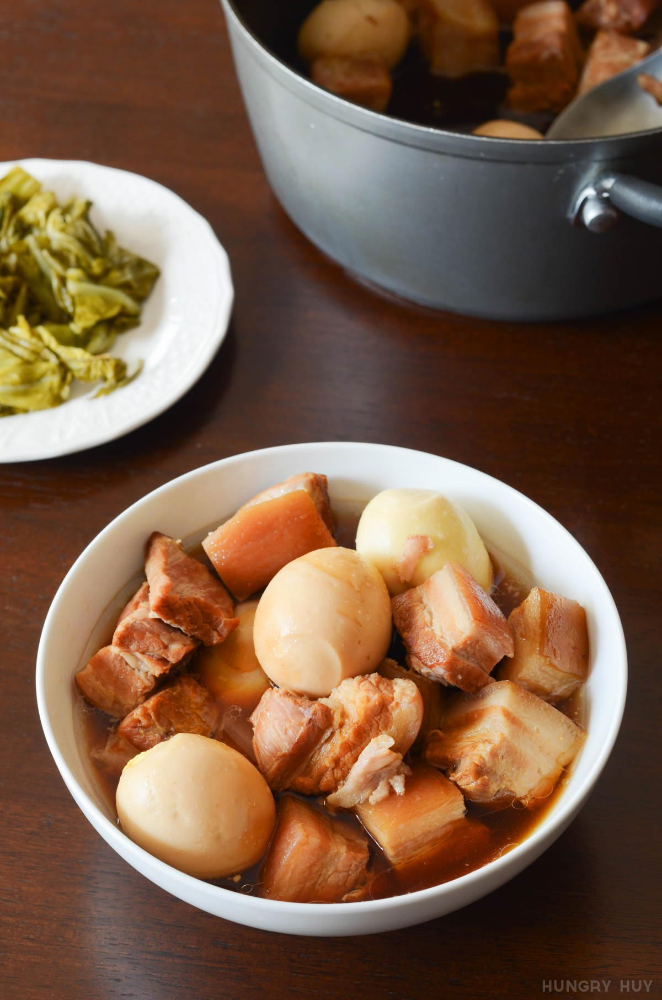

Thit Kho

Description
"This Vietnamese thịt kho recipe is a low and slow braise with suuuper tender and flavorful pork, with hard-boiled eggs that have absorbed all the seasoning too. It's traditionally served around the lunar new year because of how well it keeps after cooking. It's savory, salty, and slightly sweet seasoned mainly with fish sauce and soy sauce paired with hard-boiled eggs."
Ingredients
- 2 lb (907.2 g) pork I like 50% belly 50% shoulder
- tap water for first boil
- 6 fl oz Rico coconut soda Coke or 7-Up works in a pinch
- 3 tbsp fish sauce
- 2 tsp salt
- filtered water
- 4 tbsp caramel color (nuoc mau) Depending on how dark your caramel sauce gets, you may not need to use all of it.
- 8 large hard-boiled eggs
- 1 yellow onion split into 8 large chunks
Method
- Cut the pork into 1.5" cubes. I like this size for ease of eating, and it cooks faster than 1 huge chunk of pork.
- Bring 2-3 quarts of tap water boiling on high, or enough to fully submerge the pork. When the water's boiling, add the pork for 1-2 minutes just to clean it. Drain then rinse the pork under running water until the water is clear.
- Add the coconut soda, fish sauce and salt to the pot, then add filtered water so it just about covers the pork.
- Turn the heat to high. When boiling, lower heat to about 25% heat or until you still see a low boil. Simmer for about 1.5 to 2 hours total, leaving covered for the first 40 minutes. Check and stir the pot every 20 minutes. The longer you cook it, the softer the pork gets. After 40 minutes, remove the cover to let the liquid reduce so you get a more concentrated sauce later.
- Make the caramel color (nuoc mau) in a separate pot and add it to the pot of thit kho
- Make the hard-boiled eggs: add the eggs to a pot and cover the eggs with cold water by 1 inch. Bring to a boil on medium-high heat. Remove from heat and let it sit for 8 minutes. Cool under running water and peel the shells.
- During the last ~30-40 minutes of cooking add the peeled eggs and onions.
- The final goal is to reduce the liquid about 1/3 of the starting amount, but you can do it based your own taste of the sauce and pork softness. When the pork hits a doneness you like, re-season with salt or fish sauce, or add water to thin out to your taste. Remember you want it a bit saltier since it will dilute when eating with rice.